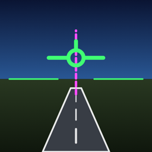

Landungen, Starts und Manöver aus dem Cockpit filmen und auswerten · iPhone und iPad · English
Das iPhone quer in der Halterung, Kamera nach vorn: FlightCoach zeigt ein HUD im Stil moderner Glascockpits (Fahrt, Höhe, Variometer, Lage, Kurs, Drehzahl, METAR) und erkennt Starts, Landungen, Durchstarten, Steilkurven und Airwork selbst. Nach dem Flug gibt es für jede Landung einen Score aus Gleitwinkel, Mittellinie, Fahrt und Aufsetzimpuls, das Video mit HUD, Karte, 3D-Ansicht und GPX-Export für FlySto, CloudAhoy und cloudlog.aero.
Kein Fluginstrument. FlightCoach dient der Nachbesprechung. Alle Werte stammen aus den Sensoren des Telefons und können falsch sein.
Fragen, Fehler, Ideen: deepframe.support@gmail.com — oder in der App unter Einstellungen → Feedback senden.
Mount your iPhone landscape with the camera facing forward: FlightCoach shows a glass-cockpit style HUD and detects take-offs, landings, go-arounds, steep turns and airwork. Each landing gets a score from glide angle, centreline, speed and touchdown impulse; replay the video with HUD, see the flight on a map and in 3D, export GPX. Not a flight instrument. Support: deepframe.support@gmail.com.
© AK